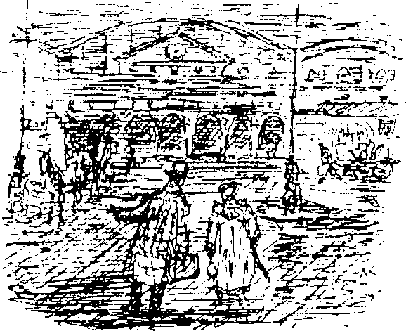
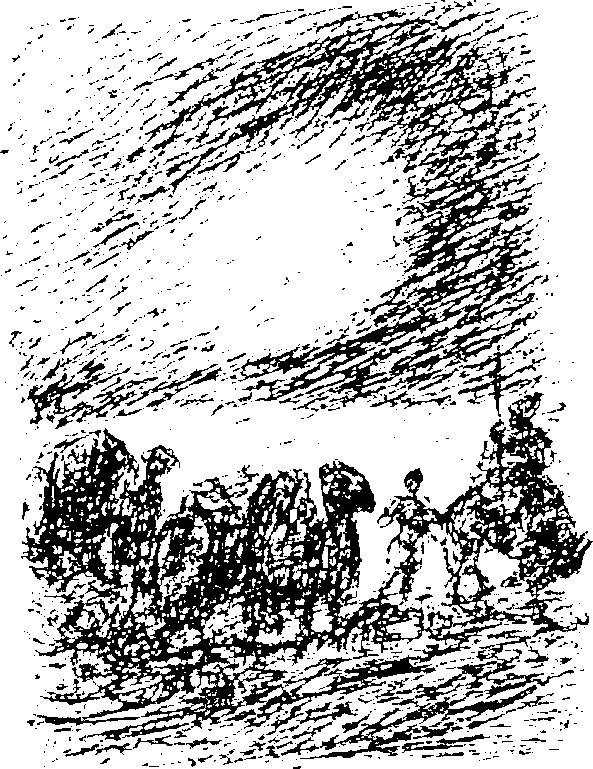

1
Bu bölümü elimden geldiği kadar çabuk anlatıp geçeceğim. Yeterli sayıda seyahat kitabı var, üstelik bir çoğu benim yazabileceğimden daha güzel şeyler anlatıyor.

Demiryolu seyahatinin telaş ve koşuşturmacasını herkes bilir. Budapeşte’yi geçtikten sonra manzara hafiften Asyalılaşmaya başladı, fakat bunları anlatmayacağım. Kitabımın Macaristan’daki satışlarını kötü etkilemek istemem. Belgrad’a geldiğimizde artık sakinleşmiştim, en azından şişkin cüzdanım yerinde mi diye on dakikada bir göğüs cebimi kontrol etmiyordum. Paranızı nerede sakladığınızı herkese belli etmenize gerek yok, özellikle Sırbistan’dayken.
Tren kompartımanlarında yolculuk ederken genelde biraz rahatsızlanırım. Bu kez kendimi çok daha iyi hissediyordum. Elbette, en rahat şartlarda yolculuk yapıyorduk. Hayaller kurarak, beni bekleyen keyifli anları düşünerek zaman geçiriyordum. Keşke karım biraz daha neşeli olsaydı. Maalesef oturduğu yerde kara kara düşünerek başağrısından şikayet ediyordu.
Bükreş’i geçtikten sonra artık kendime bile tahammül edemiyordum. Ne kadar rahat olursanız olun iki geceden sonra trende seyahat can sıkıcı olmaya başlar. Yolun son birkaç saatinde neredeyse kafese kapatılmış yabani hayvanlar gibiydik.
Karadeniz göründüğünde sabahın erken saatleriydi, bir süredir koridorda dikilerek trenin son istasyona varmasını bekliyorduk, inmeye hazırdık. Constanta’ya vardığımızda güneş doğmak üzereydi. Bagajımızı toparlamak için epey itiş kakış yaşadık.
Bizi Batum’a götürecek olan buharlı gemi Austrian Lloyd denizcilik şirketine aitti. Temiz ve rahat bir gemiydi, karımın üzerinde iyileştirici bir etkisi oldu. Güzelce banyo yaptıktan sonra tren yolculuğunun etkisini üzerinden attı, temiz havanın ve denizin keyfini çıkarmaya başladı. Ben arka güvertede durmuş karanın gözden kayboluşunu seyrediyordum. Avrupa... Kısa bir süre sonra sahil ufukta ince bir çizgi halini aldı. Derken o da kayboldu. Kendimi karayı görmeye zorladım, uzun bir süre sahili hâlâ görebildiğime inandırdım.
Karım yol arkadaşlarımıza karşı sakıngan davranmamı öğütledi, haklıydı da. İnsan, yolculuk sırasında benim ki gibi bir fikirle dopdoluyken gideceği yeri kolaylıkla ağzından kaçırabilir. Böyle bir hatanın nahoş sonuçları olabilirdi.
Gautsch anlattıklarını gizli tutmamı söylerken şaka yapıyor gibi görünmüyordu. Bu sırrı açıklayanlar Rüya Ülkesi’ne alınmayabilir, geri dönüş masraflarını karşılamak zorunda kalabilirdi. Asla öyle olsun istemezdim! Bu yüzden çok sessizdim; gerçi bu çok zor olmadı, çünkü güvertede hiç Alman yoktu ve ben Almancadan başka lisan bilmiyorum. Sonuçta Rüya Ülkesi’ni her zamankinden daha çok düşünmeye başladım, kendimi uçsuz buçaksız hayallere kaptırdım.
Bu ruh hali sürdü gitti, sadece tekrar tren yolculuğuna başlamak zorunda kaldığımız zaman hayallerden sıyrılır gibi oldum. Oysa karım Rus vagonlarının ferahlığına bayılmıştı. Ah, Rusya! İşte bu tam bana göre bir ülkeydi. Çok geniş, bereketli, yontulmamış fakat nakit parayı görür görmez ayrıcalık sağlamaya hazır... Bizim gibi maddi imkânları olanlar bu ülkede kolayca yaşayabilirdi. Damarlarımda dolaşan birkaç damla Slav kanını kutlayarak kadehimi çara kaldırdım. Rus İmparatorluğu’yla ilgili bu olumlu görüşümün en önemli sebebi pasaport kontrolü ve gümrük formalitelerinden görülmemiş çabuklukla kurtulmuş olmamızdı.
Münih’ten ayrıldıktan bir hafta sonra Krasnovodsk’taydık. Hazar Denizi’ni çoktan geride bırakmıştık. Denizi, daha önce hiç görmediğim türden bir Rus gemisiyle birkaç saatte geçmiştik. Pis bir gemi enkazıydı bindiğimiz! Çar hakkındaki olumlu görüşlerim hemen değişti. Fakat bir şeyi itiraf etmek zorundayım. Görebildiğimiz kadarıyla Kafkasya çok güzeldi.
Artık ben bile seyahat etmekten yorulmuştum. Parmağınızı kaldırmadan dünyanın yarısının pencerenizin önünden akıp geçtiğini görseniz bile bütün gün bir kompartımana tıkılıp kalmak çok zordu. Kahretsin,. egzersiz yapmaya ihtiyacım vardı!
Sayıları artarak trene yaklaşan şüpheli tipler ayaktakımı gibi görünüyorlardı. Artık çölden geçiyor, direkt Merv’e doğru ilerliyorduk. Çevremizde vahalar belirip kayboluyordu. Yeni yiyecekler midelerimizi bozdu, gerçi yiyecekler olmasa da zincirleme içtiğim sigaralar aynı etkiyi zaten yaratıyordu. Ne yazık ki Münih ve Merv arasında içtiğim sigaraları saymadım. Şimdi de tütün sorunu gelmişti aklıma. Tütünüm! Onu ne yapacaktım? Kitaplarımın sayfaları arasına saklamak iyi bir fikre benzese de bu imkânsızdı. Çaresizliğe kapılarak karıma tütünü saçlarının arasına saklayarak kaçırıp kaçıramayacağımızı sordum. Aklımda dev gibi bir topuz yapmak vardı ama karım beni ciddiye bile almadı. Her zamanki gibi aklıma en son gelen fikir en iyisiydi. Tütünü saatler boyunca büyük bir sabırla şişme bir yastığa doldurdum. Yastık öyle bir şişti ki! Onu göğsüme bastırarak bir an bile yanımdan ayırmadım. Kendi tütünümü yanımda götürmeye mecburdum, Rus sigaraları bana göre çok sert, tütün konusunda çok seçiciyimdir. Elbette, az parayla seyahat etmeye alışık olduğum için birkaç ruble vererek bu sorunu toptan halledebileceğim hiç aklıma gelmedi. Fakat yastık dolusu tütünüm sonsuza kadar dayanmayacaktı, peki sonra ne olacaktı? Üzüntüyle çözüm yolları aradım ve en sonunda Rüya Ülkesi’ne güvenmeye karar verdim. Gautsch güvenilir bir adama benziyordu. Kendimi yeniden gelecekle ilgili hayallere kaptırdım.
Karım kendini çok iyi hissediyordu. Seyahat uzadıkça canlanmaya başladı. Seyahat etmeye uyum sağladığını iddia ediyordu. Bunun nasıl olduğunu anlamadım fakat içten içe hayranlıkla karışık bir kıskançlık duyuyordum. Tren Merv’de kısa bir süre durdu. Yan hatlardan birinde vagonları, eski demirler ve hurdayla dolu bir tren duruyordu. Hurdaları incelerken içimden belki de Pearl’e mal götüren bir trendir, dedim. Bir Rüya sevkiyatı!
Karım benim için endişelenmeye başlamıştı. Kendimi gelecekle ilgili hayallerin içinde kaybetmemden hoşlanmıyordu.
“Yolculuğun bütün eğlencesini kaçırıyorsun. Bütün bu egzotik manzaralar, fantastik giysiler arasında senin ilgini çekecek hiçbir şey yok. Genelde çizim defterini cebinden çıkarman için kapıdan dışarı bir adım atmamız yeterli olurdu, ama şimdi pencereden dışarı bile bakmıyorsun.”
İç geçirdi, evet, haklıydı. Fakat bir şey söylemedim. İç geçiren kadınlara katlanamam. Sonra elimi okşadı. “Gelecek nasıl büyük zaferler getirecek olursa olsun şu anki gerçekliği görmezden gelmemeliyiz.”
Kompartımanımızın penceresine doğru yürüdüm. Peron karmakarışık bir kalabalıkla doluydu, tıklım tıklımdı, her ulustan insan vardı; Ermeniler, Yunanlılar, Yahudiler, kürkler içinde Ruslar, Tatarlar, çekik gözlü Kalmuklar, hatta Almanlar. Görecek binlerce ilginç şey vardı. Kürkler için bağırıp çağırarak pazarlık eden insanlar, yanlarında peçeli kadınlarla Türkler vardı, bir Ermeni bana meyve satmaya çalıştı, bir paket safranı cebime tıkmayı bile denedi. Ne işime yarayacaktı ki?
Kargaşa giderek arttı. Hareket etme zamanı yaklaşıyordu. Trenin arkasına dev ipek balyaları yükleniyordu. Bir balya havaya kaldırılınca taşıyanlardan bana “vak” sesi gibi gelen komik bir ses yükseliyordu. Çerkez üniforması giymiş yakışıklı bir adam, muhtemelen bir subay, arkadaşlarına veda ediyordu. Yan kompartımana bindi. Bütün bunlar, hatta çok daha fazlası karanlıkta istasyon lambaları tarafından aydınlatılıyordu. Kesinlikle pitoresk bir manzaraydı.
Trenimiz yola koyuldu. Koridorun sonuna istiflenmiş bir yığın fıçıya gözüm takıldı. Bu fıçıları Bakü’den beri görüyordum, gemiyi fena halde kokutmuşlardı.
“Manzarayı beğendin mi sevgilim?” diye sordu karım.
“Seyahat edebiyatının doğruluk derecesini kontrol ediyorum,” dedim kayıtsız bir sesle.
II
O gece pek iyi hissetmedim. Son zamanlarda herhangi bir macera fikri hoşuma gidebilirdi, fakat macera dediğiniz sıradan bir şey, beylik bir olay olmamalıydı. Elbette, on gün durmaksızın seyahat etmenin bedelini ödüyordum. Perişan olmuştum! Yatak bozması döşeğimde bir o yana bir bu yana dönüp inleyerek sızlanıyordum.
“Bu Rüya Ülkesi aldatmacadan başka bir şey değil, göreceksin,” dedim karıma. “Bizi arabayla ulaşılamaz pis bir deliğe götürüp sadece zengin diye Patera’ya ve onun saçmalıklarına hayran olmamızı bekleyecekler. Zengin bir adama sadece zengin diye hayranlık duyamam. Bir müddet sonra paramız da yetmeyecek, bunu şimdiden görebiliyorum. Her şeyi fahiş fiyatlarla satıp hepsini geri alacaklar.”
Canım çok sıkılıyordu, derin bir hayal kırıklığı duyuyor, çok karamsar hissediyordum. Hâlâ Doğu’ya doğru gidiyorduk, her şey doğuya özgü görünse de evde hayal edebileceğiniz gibiydi. “Bütün bunların sonunda bizi ne bekliyor?” diye derin düşüncelere daldım. “Çeşitli boyutlarda birkaç ev, yabancılarla dolu bir yerleşim bölgesi, bir bahçe. Sadece bunun için mi bu trenin içinde ölümüne sallanıyorum?”
Karım beni yatıştırmak için elinden geleni yaptı. “Eğer orayı sevmezsek hemen döner evimize gideriz,” dedi. “Böyle kötümser olman için şimdilik hiçbir sebep yok.”
“O temsilci kurnaz bir satıcıydı. Kapıdan içeri girmesine bile izin vermemeliydim. Beni niçin uyarmadın sanki?"
“Peki ya para?” diye sordu gülümseyerek.
“Lütfen bir daha o paradan bahsetme. Patera kadar zengin biri çevresinde adam gibi insanlar olsun diye birkaç milyonu kolayca saçabilir.”
Esneyerek karıma sırtımı döndüm. Kadınlar biz erkekleri asla anlamaz. “Sence değerimizi biraz abartmıyor musun?" dediğini duyduğumda neredeyse uykuya dalmak üzereydim. Akıllıca davranıp ona yanıt vermekten kaçındım.
Aceleyle koşuşturan birinin gürültüsü Buhara’ya vardığımızı haber verdi. Şafağın parlak ışığı. Yattığım yerden türbanları ve astragan şapkaları görebiliyordum. Şimdi tren fark edilir biçimde hızlanmıştı. Belki bazı vagonlar çıkarılmıştı, ya da yeni bir lokomotif eklenmişti. Semerkant’a akşam üzeri varmamız bekleniyordu.
Neşe ve canlılıkla ayağa kalktım. Dışarıdaki manzara muhteşemdi. Artık sıkıntı vermeye başlayan çöl, yerini verimli, yemyeşil çayırlara bırakmıştı. Aylardan kasım olmasına rağmen hava sadece biraz serindi, o kadar. At ve deve sürüleri oyuncu yavrularıyla manzaraya hareketlilik kazandırıyordu. İnsanlığın beşiğine çok yakın olduğum düşüncesi aklımdan geçti. Her biri katışıksız bir soydan gelmiş olmasa da belki de elli ırkın temsilcilerini burada bulabilirdiniz. Antik dünyanın büyük ticaret yolları buradan geçmişti. Büyük İskender... Neyse bu kadarı yeter, bir seyahat kitabı yazmaya hiç niyetim yok.
Heyecandan yanaklarım kızarmıştı. Büyülenmiş gibi pencereden sarkıyor, bir o yana bir bu yana bakıp duruyordum. Ve işte, orada! Uzakta bir şeyler ortaya çıkıyordu. Ufukta binalar dizisi uzanıyordu. Minareler, kiliseler; Semerkant! Semerkant! Yeşil ve mavi sırlarla kaplı çinilerden yansıyan güneş ışığı şehre giderek yaklaştığımızın işaretçisiydi. Açıkça itiraf etmeyecek olsam da çok keyiflenmiş, neredeyse sarhoş olmuştum, yine de hafif bir şüphe de hissediyordum. Hayal kırıklığı nerede karşımıza çıkacaktı acaba? Ne de olsa bilinmeyene doğru gidiyorduk.
Tren Semerkant’a varınca kendime gelmeye başladım. Platforma inip çevremize bakınmaya başlayınca bir adam yanımıza yaklaştı. Ermeni ve Doğu Prusyalı karışımı olmalı, diye tahminde bulundum.
“Hoş geldiniz beyefendi, hoş geldiniz hanımefendi. Herr Gautsch geleceğinizi haber vermişti.” Eğildi. Akıcı bir Almanca’yla konuşuyordu.
“Nereye gidiyoruz?” diye sordum soğuk bir ifadeyle.
Bir daha eğildi, dönüp karıma da reverans yaparak kendisini tanıttı. “Bendeniz Kuno Eberhard Teretatian, Patera’nın temsilcisiyim. Bana gösterecek bir belgeniz var mı?”
Irkları tahmin etmek konusundaki içgüdümü takdir edip meleze Patera’nın resminin durduğu kutuyu uzattım. Son yarım saattir sıkı sıkı avcumda tutuyordum.
“Teşekkürler. Yeterli. Üç saatiniz var beyefendi, ve hanımefendi. Saat şu an iki, konvoy saat beşte yola çıkıyor. Eğer dilerseniz benim dairemde dinlenebilir, yol yorgunluğunu üzerinizden atabilirsiniz.”
Bu arada öküz kadar güçlü birkaç görevli bavullarımızı bir el arabasına doldurup ortadan kaybolmuşlardı. Herr Teretatian’la birlikte yola koyulduk. Bizi bir arabaya bindirmeye çalıştı fakat istemedik.
“Yürümeyi tercih ederiz. Daireniz çok uzak mı?”
“Yarım saat uzaklıkta, efendim.”
“O zaman hemen yola koyulalım.”
III
Sanırım doğuya özgü şehirlerin nasıl olduğunu biliyorsunuzdur. Tıpkı vatanınıza benzerler, sadece doğudadırlar. Bir o tarafa bir bu tarafa gidip sokaklardan ve meydanlardan geçtik, sanki Binbir Gece Masalları’ndan sahnelerin arasında dolaşıyorduk. Yarım saat kadar dolaştıktan sona ortalık sessizleşti, artık şehir dışına yaklaşmış olmalıydık. Rehberimiz bir evin önünde durdu ve, “İşte geldik,” dedi.
Bizi giriş katında bir odaya götürdü. Bavullarımız çoktan gelmişti, avluda durduklarını görebiliyordum. Bu keyifli odanın kalın bir halıyla kaplı yerinde oturup mükemmel ve hafif bir yemek yedikten sonra ev sahibimiz hakkında daha olumlu düşünmeye başladım. Patera’nın bu ikinci temsilcisi ilkinden çok daha kibardı, neredeyse kırılacaktı kibarlıktan.
“Pekâlâ, Rüya Ülkesi’nde yeni gelişmeler neler, Herr Teretatian?” diye neşeyle sordum incir ve üzüm tabakları arasından.
“Hiçbir şey. Yani pek bir şey yok. Tiyatro, ama sanırım tiyatromuzu zaten duymuşsunuzdur, değil mi beyefendi?”
“Kesinlikle duymadım. Hiçbir şey duymadım,” diye haykırdım Rüya Ülkesi’yle ilgili her şeyi öğrenmeye can atarak.
“Efendimizin yeni bir fikri! Bina bir ay kadar önce kuruldu. Daha geçen hafta bir araba dolusu dekor, kostüm ve peruğun nakliyesiyle uğraşırken bir sürü sorun çıktı. Korkarım onu burada bırakmak zorunda kalacaksınız hanımefendi," dedi karımın içeri taşımakla meşgul olduğu pırıl pırıl gaz ocağını işaret ederek. Avluda oynayan bir çocuğu seyretmeye dalmış olan eşim onu duymadı.
Karımı dürtükleyerek, “Ne demek istiyorsunuz?” diye haykırdım.
“Korkarım bu konuda yapılacak bir şey yok,” dedi. “Daha geçenlerde bir opera sanatçısı gardırobuna el koyduğum için kıyameti kopardı. Öğüdümü dinlerseniz bir sürü gereksiz can sıkıntısından kurtulmuş olursunuz.”
Adamı dinlerken sanki dilim tutulmuştu. “Eşyalarıma ihtiyacım var,” dedim öfkeyle.
“Fakat kaygılanmanıza hiç gerek yok beyefendi. Hiçbir şeye muhtaç olmayacaksınız, hiçbir şeyden mahrum kalmayacaksınız. Buna emin olabilirsiniz.”
Karım bana döndü. “Acaba eşyalarımızı güvende olsunlar diye buraya mı bıraksak? Birkaç gün idare edebiliriz, sonra arkadaşın bavullarımızı bize gönderir?”
Temsilci, bu işbirliği önerisini kendi düşüncesini öne sürmek için kullandı. “Opera sanatçısı şimdi çok mutlu. Çöle gitmiyorsunuz ki beyefendi. İki gün sonra Pearl’de olacaksınız, orada istediğiniz her şeyi bulabilirsiniz.”
“Bu da ne demek? İki gün mü dediniz? Haritaya bakınca yol en az bir hafta sürer sanmıştım.” Hayretler içinde kalmıştım.
“Bu durumda yolu doğru dürüst biliyor olamazsınız,” dedi yarı Ermeni melezimiz yüzünde nazik bir gülümsemeyle. “Sık sık durup dinlenseniz bile varmanız üç günden fazla sürmez.”
Karım söze karıştı. “Yanımıza neler alabiliriz?”
“Bavyeralı temsilcimiz anlatmış olmalı hanımefendi. Kurala göre giriş kapısından sadece eski eşyaları geçirebilirsiniz.”
Bu kadarı da fazlaydı. “Yanımızda döküntü eşyalar getirmedik!” dedim.
“Ben ‘eski’ dedim beyefendi, ‘döküntü’ demedim.” “Tartışmaya girmeye gerek yok, sevgilim. Belki bu beyefendi bavullarımızı kontrol etme kibarlığını gösterir.”
Bavullarımızı inceletmek için dışarı çıktık. Güvende olsun diye hemen tütün yastığımı kucakladım. Bavullarımız bir bir açıldı ve içlerindekiler tuhaf bir incelemeye tabi tutuldu. Bir fotoğraf makinesi bütün aksesuarlarıyla birlikte bir kenara konuldu, arkasından kusursuz bir dürbün de bir kenara atıldı. Traş makinemi görünce “Tanrı aşkına!” dedi adamcağız. Karımın makyaj çantasını da dikkatle inceledi. Giysilerimizle ilgili de şüpheleri vardı sanki. Son moda güzelim paltoma -gurur duyduğum bir giysiydi bu- gelince, “Bu paltoyu elden geçirteceğinize hiç şüphem yok beyefendi, bir centilmen, giysileriyle dikkat çekmek istemez,” dedi. Sıra karımın iç çamaşırlarına gelmişti, baktım ki bizim sersem onları da inceleyecek, araya girdim. “Onlar kalacak. Hiçbirine dokunulmayacak!” Kitaplarımız da dikkatle gözden geçirildi, eski güzel baskılarımın bende kalmasına izin verildi.
Herr Teretatian mekanik bir sesle durmadan, “Beyefendi ve hanımefendi hiçbir şeyden mahrum kalmayacak,” diye tekrarlıyordu. Fakat bu arada en küçük detay bile gözünden kaçmıyordu.
“Her şey yolunda beyefendi,” dedi ve yerlere kadar eğildi. Saat dört olmuştu.
Kalan bir saatimizi bir bakıma el konulduğunu söyleyebileceğimiz eşyalarımızın yerine yenilerini alarak Semerkant’ta geçirdik. Eski ve muhteşem bir semaver satın aldım, belki bizim gaz ocağı kadar kullanışlı değildi fakat çok daha güzeldi. Herr Teretatian’ın evine döndüğümde dev tekerlekli ve geniş iki araba kapının önünde bekliyordu, arabalara birer deve koşulmuştu. Bu komik görünüşlü araçlara şüpheli bir bakış attım.
“Beyefendi ve hanımefendi çok rahat bir yolculuk yapacaklar, koltuklara battaniye serdik. Rehberiniz güvenilir bir adamdır, isteklerinize harfiyen uyması öğütlendi. Arabaya tırmanırken ağzına kadar dolu birkaç yiyecek sepeti olduğunu görünce hemen yumuşadım. Ev sahibimize teşekkür edip elini sıktım.
Alayımızın başında rehberimiz ilerliyordu, uzun yeleli bir ata binen ufak tefek bir Kırgızdı. Her arabanın yanında bir adam ilerliyordu, arkada da yeşil kasketli ve siyah kaftanlı iki tane uşak duruyordu.
Yola koyulduk. İstediğim macerayı elde etmiştim.
IV
Şehir gözden kaybolduktan uzun süre sonra bile Timur’un mezarını görebiliyorduk; rengarenk gün batımına karşı yükselen menekşe rengi bir kubbeydi. Yanımda yatan karım kafası olan bir bohçaya benziyordu. Uykuya dalmak üzereydi, belli belirsiz mırıldanmalarla cevap verdiği için onunla konuşmaktan vaz geçtim. Arabamızın içi karanlıktı. Manzara çoraklaşıyor, kayalıklar giderek artıyordu, çevremizdeki her şey soğuk yeşile dönüşmüştü. Ben de yorulmaya başlamıştım, oynadığımız kuman düşününce içimi kaplayan yeni bir pişmanlık dalgası bile yorgunluğumu dağıtamadı. Karım da ben de bitkin düşmüştük.
Dışarıda, yapraklarını dökmüş ağaçlar, kaktüsler ve çalılıklar, yeşil renkli alacakaranlıkta akıp gidiyordu. Araba beşik gibi sallanıyordu. Konvoyun başından uzun, hüzünlü bir müzik geliyordu. Uyumadan önce düşündüğüm son şey, “Bu sesi sadece küçük bir enstrüman çıkarabilir...” oldu.

Hepimiz gezginiz, istisnasız hepimiz gezginiz. İnsanlığın ilk zamanlarından beri böyleydi bu, hep böyle kalacak. İlk göçmenlerden günümüzdeki turistlere, akınlar ve seferlerden günümüzdeki keşif gezilerine, amaç ne kadar değişirse değişsin gezginlik hep aynı kalacak. Yürüyerek, at sırtında, tekerleklerle, buharla, elektrikle, benzinle, neyle olursa olsun, araç önemli değil, gezip dolaşma arzusu hep vardı. Bir otele de gitsem, dünyanın öbür ucuna da, ben bir gezginim, benimle birlikte bütün hayvanlar da orada, burada, her yerde geziyorlar. Bütün dünya gezginlerle dolu. Bu bizim kanımızda var, doğanın kanunu. Ne kadar yorgun olursanız olun devam etmek zorunda hissedeceksiniz... Gerçek huzuru sadece gezip dolaşmamız bitince buluruz. Aslında hepimiz içten içe gezginliğin bitmesini istiyoruz, sadece itiraf etmekten kaçıyoruz. Çoğumuz farkında bile değil bu isteğin. Zaten uzaklara yolculuk etmiş, artık durmak isteyenler ya da hastalanıp yataklara düşmüş, gezemez durumda olanlar var, bu insanlar zihinlerinde ve hayallerinde uzaklara, çok uzaklara yolculuk etmekten asla vazgeçmezler... Kımıltısız durmak mı, hayır, imkânsızdır bu.
Gece bir kere uyandım. Dışarıda parlak ay ışığı vardı. Bir kuyu başında durmuştuk, hayvanların su içtiğini duyabiliyordum. Karımın gözleri sımsıkı kapalıydı, yüzünde ciddi bir ifade vardı.
“İyi ki uyuyorsun,” diye düşündüm, “yarın dinlenmiş kalkarsın.”
Sanırım dağlarda ilerliyorduk. Araba sarsılarak Rüya Ülkesi’ne doğru ilerlerken uyku yeniden bastırdı. Uykumu alamamıştım, hâlâ çok uykum vardı. ..
Birdenbire dışarıda bir şeyler olduğunu hissettim. Araba durmuştu.
“Geldik. Yol boyunca uyudunuz.” Birisi bacağımı dürtüyordu, aldırış etmedim. Hâlâ çok uykum vardı, hiçbir şey söylemeden öylece yatmaya devam ettim. Karım uyanmıştı, baştan çıkarıcı bir ses tonuyla bana seslendi, “Kalk artık, Rüya Ülkesi’ne geldik.”
“Tamam, geliyorum,” deyip olduğum yerde yatmaya devam ettim. Huyum böyledir. Arabanın yanında bir takım resmi konuşmalar oluyordu. Kalkma zamanının geldiğine karar verdim, kendimi zorlayarak uyandım ve arabadan aşağı indim.
Gözlerimin karanlığa alışması biraz zaman aldı. Çevremizi gri bir sis tabakası kaplamıştı, tek görebildiğim karanlığı delen birkaç adet ışıktı. İlk adımımı atınca neredeyse arabaya çarpıyordum. Tam önümde duran araba gözüme devasa görünüyordu. Arabanın arkasında, gölgeler arasında bir canavar duruyordu. Ah, deveymiş! Artık çevreyi daha net görmeye başlamıştım.
“Lütfen yaklaşın,” diye emretti etkileyici bir ses. “Bavullarınızı kontrol ettik. Güvenlik belgenizi de görebilir miyim?”
Konuşan, koyu renk üniforma giymiş uzun boylu, sakallı bir adamdı, başında resmi bir kep vardı. Birkaç lambayla aydınlatılan, taştan yapılma, alçak bir binanın önünde duruyorduk. Görevli resmi bana geri verdi ve treni yakalamak için giriş kapısından bir an önce geçmemiz gerektiğini söyledi.
“Ne kapısı, ne treni?” diye merakla düşündüm el yordamıyla ilerlerken. “Burada bir şey var,” dedi karım. İşte ancak o zaman sis perdesinin arkasından çıkan uçsuz bucasız duvarı gördüm. Birdenbire, beklenmedik bir biçimde önümde beliriverdi. Önümüzde elinde lambayla yürüyen biri vardı, dev, kara bir deliğe doğru ilerliyordu. Rüya Ülkesi ’nin giriş kapısı! Ne kadar büyük olduğunu ancak iyice yaklaştığımız zaman anladım. Rehberimizi elimizden geldiğince yakından takip ederek bir tünele daldık. Sonra tuhaf bir şey oldu. Kubbeli tavanın altında biraz ilerlemiştim ki, birdenbire bir korku nöbetine tutuldum, daha önce hiç bu kadar korkmamıştım. Bu his, başımın arkasında başlayıp belkemiğime yayıldı. Nefesimi tuttum, neredeyse kalbim duruyordu. Dehşet içinde karıma doğru döndüm, ama o da bir ceset gibi bembeyaz kesilmişti, yüzü ölüm korkusuyla kaplanmıştı. Titrek bir sesle fısıldadı: “Buradan bir daha asla çıkamayacağım.”
Kendimi birdenbire yeniden güçlü hissettim. Tek kelime etmeden karımın koluna girdim.